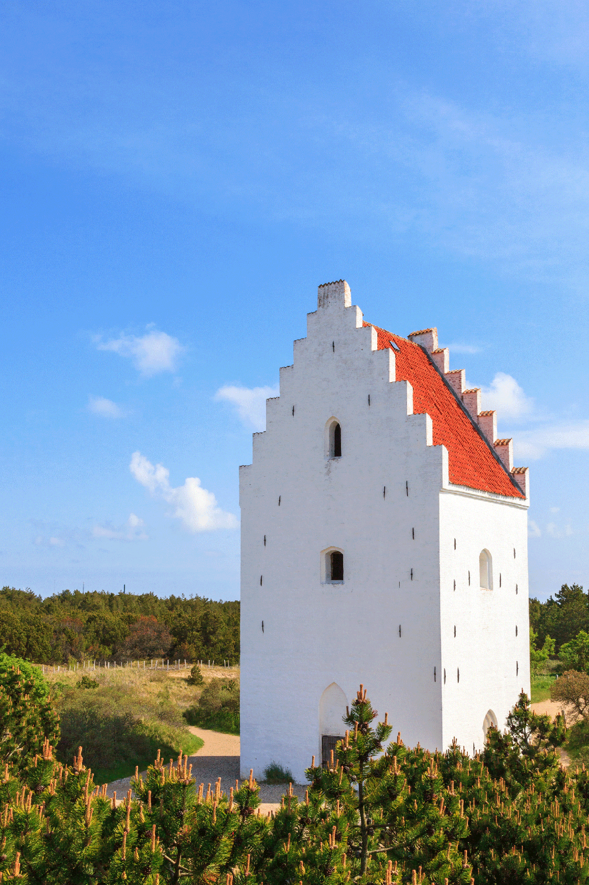

Unitate și rivalitate nordică
În 1397, odată cu Uniunea Kalmar, Danemarca (incluzând Groenlanda și Islanda), Norvegia și Suedia au fost unite într-o monarhie unică condusă de regina Margareta I.
Uniunea Kalmar a durat până când Suedia s-a desprins în 1523, prima lovitură într-o lungă rivalitate între Danemarca și Suedia pentru dominația în regiune.
Cele două țări au luptat în mod regulat și în 1658 Danemarca a trebuit să cedeze provinciile Skåne, Halland și Blekinge, care astăzi alcătuiesc provinciile cele mai sudice ale Suediei. În 1814, suveranitatea Norvegiei a fost transferată și în Suedia. Islanda și-a câștigat independența în 1918.

Biserica Laurentii din regiunea Vendsyssel a fost construită în a doua jumătate a secolului al XIV-lea și era la acea vreme cea mai mare biserică din nordul Iutlandiei. De-a lungul timpului, biserica a fost acoperită de nisip purtat de vânt, iar astăzi doar turnul este vizibil.